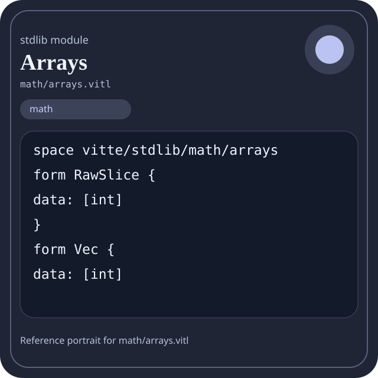

Stdlib module math/arrays.vitl
This page is a wiki-style reference for one concrete stdlib file. It explains what the file owns, where it fits in the family, and how to decide whether this is the right surface to depend on.

math/arrays.vitl.Family: math
Kind: public stdlib surface
Page style: this reference follows the same “encyclopedic card + portrait + usage contract” logic as the keyword pages, but for stdlib modules.
Summary
- Overview
- Purpose
- Taxonomy
- Implementation profile
- Top-level API inventory
- Position in family
- Declaration map
- Representative signatures
- How to use this module
- User example
- Keyword coverage
- Source shape
- Source landmarks
- Source organization
- Complete API catalog
- Integration boundaries
- Composition guidance
- Relationship table
- Neighbor modules
Overview
| Field | Value |
|---|---|
| Path | math/arrays.vitl |
| Family | math |
| Kind | public stdlib surface |
| Line count | 640 |
| Declared procedures | 83 |
| Declared forms/picks | 2 |
`math/arrays.vitl` is a public stdlib surface inside the `math` family. It should be read as one focused slice of the broader family responsibility: Arithmetic, algebra, comparison, calculus, geometry, modular arithmetic, number theory, probability, statistics, matrix, and vector helpers.
Purpose
This file should be chosen because of responsibility, not because its name “sounds close enough”. Inside the math family, it carries one focused part of the contract and keeps that responsibility separate from neighboring concerns.
- A scoring engine can compute aggregates in `math` while keeping I/O and transport elsewhere.
- A statistics or matrix chapter should explain the workflow around the computation, not just a single formula.
Taxonomy
Think of this page as a generated encyclopedia entry rather than a hand-written tutorial. The goal is to show what kind of module this is, how dense it is, and what reading strategy makes sense before depending on it.
- Large algorithm surface: this file exposes many procedures and likely acts as a domain toolkit rather than a single thin wrapper.
- Owns domain vocabulary: the module declares data shapes in addition to executable helpers, so its types are part of the contract.
- Minimal top-level dependencies: the module reads as mostly self-contained from its opening declarations.
- Explicit export surface: the file ends with visible export declarations instead of relying only on implicit namespace discovery.
Implementation profile
This profile is inferred directly from the source text. It does not replace reading the file, but it tells you quickly whether the module is mostly declarative, loop-heavy, branch-heavy, or organized around many small exits.
| Signal | Count | What it suggests |
|---|---|---|
if | 49 | Branching density and local decision-making. |
while | 36 | Loop-heavy or iterative implementation style. |
for | 0 | Collection-style traversal at source level. |
match | 0 | Variant-driven branching or grammar-style decoding. |
let | 84 | Local state and intermediate value density. |
give | 114 | Number of explicit exit points and result shaping. |
Top-level API inventory
| Surface | Items |
|---|---|
| Procedures | len, is_empty, first_or, last_or, first, last, contains, index_of, count, last_index_of, copy, append |
| Forms | RawSlice, Vec |
| Picks | none declared at top level |
| Constants | none declared at top level |
| Exports | * |
Imported surfaces
This file does not advertise a top-level `use` surface in its opening declarations. That often means it is either self-contained or an aggregation layer.
Position in family
This file is module 4 of 21 in the math family when ordered by path. By procedure count it ranks 3, and by line count it ranks 6. Those ranks are useful as rough signals of breadth, not as quality judgments.
Declaration map
The declaration map turns raw source into a scan-friendly catalog. It is useful when the file is large enough that a reader wants to orient by kinds of surfaces first.
| Line | Name | Kind | Role |
|---|---|---|---|
| 1 | vitte/stdlib/math/arrays | space | Declares the namespace that anchors this file in the stdlib tree. |
| 3 | RawSlice | form | Introduces a structured data shape that other procedures can exchange. |
| 7 | Vec | form | Introduces a structured data shape that other procedures can exchange. |
| 11 | len | proc | Represents one top-level surface in the file contract and should be read as part of the module boundary. |
| 15 | is_empty | proc | Represents one top-level surface in the file contract and should be read as part of the module boundary. |
| 19 | first_or | proc | Represents one top-level surface in the file contract and should be read as part of the module boundary. |
| 26 | last_or | proc | Represents one top-level surface in the file contract and should be read as part of the module boundary. |
| 33 | first | proc | Represents one top-level surface in the file contract and should be read as part of the module boundary. |
| 34 | last | proc | Represents one top-level surface in the file contract and should be read as part of the module boundary. |
| 36 | contains | proc | Represents one top-level surface in the file contract and should be read as part of the module boundary. |
| 47 | index_of | proc | Represents one top-level surface in the file contract and should be read as part of the module boundary. |
| 58 | count | proc | Represents one top-level surface in the file contract and should be read as part of the module boundary. |
| 70 | last_index_of | proc | Represents one top-level surface in the file contract and should be read as part of the module boundary. |
| 81 | copy | proc | Represents one top-level surface in the file contract and should be read as part of the module boundary. |
| 82 | append | proc | Represents one top-level surface in the file contract and should be read as part of the module boundary. |
| 83 | prepend | proc | Represents one top-level surface in the file contract and should be read as part of the module boundary. |
| 84 | concat | proc | Represents one top-level surface in the file contract and should be read as part of the module boundary. |
| 85 | push | proc | Represents one top-level surface in the file contract and should be read as part of the module boundary. |
| 87 | set_at | proc | Owns a concrete data shape or the operations that maintain it. |
| 104 | swap | proc | Represents one top-level surface in the file contract and should be read as part of the module boundary. |
| 115 | clear | proc | Represents one top-level surface in the file contract and should be read as part of the module boundary. |
| 117 | take | proc | Represents one top-level surface in the file contract and should be read as part of the module boundary. |
| 127 | drop | proc | Represents one top-level surface in the file contract and should be read as part of the module boundary. |
| 140 | pop | proc | Represents one top-level surface in the file contract and should be read as part of the module boundary. |
| 147 | pop_at | proc | Represents one top-level surface in the file contract and should be read as part of the module boundary. |
| 149 | insert | proc | Represents one top-level surface in the file contract and should be read as part of the module boundary. |
| 159 | remove_at | proc | Represents one top-level surface in the file contract and should be read as part of the module boundary. |
| 166 | repeat | proc | Represents one top-level surface in the file contract and should be read as part of the module boundary. |
| 176 | fill | proc | Represents one top-level surface in the file contract and should be read as part of the module boundary. |
| 178 | reverse_copy | proc | Represents one top-level surface in the file contract and should be read as part of the module boundary. |
| 188 | reverse | proc | Represents one top-level surface in the file contract and should be read as part of the module boundary. |
| 190 | sum | proc | Represents one top-level surface in the file contract and should be read as part of the module boundary. |
| 200 | min | proc | Represents one top-level surface in the file contract and should be read as part of the module boundary. |
| 215 | max | proc | Represents one top-level surface in the file contract and should be read as part of the module boundary. |
| 230 | mean_floor | proc | Represents one top-level surface in the file contract and should be read as part of the module boundary. |
| 237 | mean_scaled | proc | Represents one top-level surface in the file contract and should be read as part of the module boundary. |
| 244 | range | proc | Represents one top-level surface in the file contract and should be read as part of the module boundary. |
| 251 | abs_int | proc | Represents one top-level surface in the file contract and should be read as part of the module boundary. |
| 258 | sum_abs | proc | Represents one top-level surface in the file contract and should be read as part of the module boundary. |
| 268 | product | proc | Represents one top-level surface in the file contract and should be read as part of the module boundary. |
| 281 | any_nonzero | proc | Represents one top-level surface in the file contract and should be read as part of the module boundary. |
| 292 | all_nonzero | proc | Represents one top-level surface in the file contract and should be read as part of the module boundary. |
| 303 | count_nonzero | proc | Represents one top-level surface in the file contract and should be read as part of the module boundary. |
| 315 | prefix_min | proc | Represents one top-level surface in the file contract and should be read as part of the module boundary. |
| 332 | prefix_max | proc | Represents one top-level surface in the file contract and should be read as part of the module boundary. |
| 349 | clamp_each | proc | Represents one top-level surface in the file contract and should be read as part of the module boundary. |
| 366 | prefix_sum | proc | Represents one top-level surface in the file contract and should be read as part of the module boundary. |
| 378 | tail | proc | Represents one top-level surface in the file contract and should be read as part of the module boundary. |
| 379 | head | proc | Represents one top-level surface in the file contract and should be read as part of the module boundary. |
| 381 | slice | proc | Represents one top-level surface in the file contract and should be read as part of the module boundary. |
| 394 | rotate_left | proc | Represents one top-level surface in the file contract and should be read as part of the module boundary. |
| 402 | rotate_right | proc | Represents one top-level surface in the file contract and should be read as part of the module boundary. |
| 411 | replace_slice | proc | Represents one top-level surface in the file contract and should be read as part of the module boundary. |
| 415 | splice | proc | Represents one top-level surface in the file contract and should be read as part of the module boundary. |
| 419 | rotate | proc | Represents one top-level surface in the file contract and should be read as part of the module boundary. |
| 426 | enumerate | proc | Represents one top-level surface in the file contract and should be read as part of the module boundary. |
| 436 | zip | proc | Represents one top-level surface in the file contract and should be read as part of the module boundary. |
| 447 | chunks | proc | Represents one top-level surface in the file contract and should be read as part of the module boundary. |
| 460 | sort | proc | Represents one top-level surface in the file contract and should be read as part of the module boundary. |
| 476 | binary_search | proc | Represents one top-level surface in the file contract and should be read as part of the module boundary. |
| 496 | map_add | proc | Owns a concrete data shape or the operations that maintain it. |
| 506 | filter_positive | proc | Represents one top-level surface in the file contract and should be read as part of the module boundary. |
| 518 | reduce_sum | proc | Represents one top-level surface in the file contract and should be read as part of the module boundary. |
| 520 | unique | proc | Represents one top-level surface in the file contract and should be read as part of the module boundary. |
| 532 | intersect | proc | Represents one top-level surface in the file contract and should be read as part of the module boundary. |
| 544 | union_values | proc | Represents one top-level surface in the file contract and should be read as part of the module boundary. |
| 549 | difference | proc | Represents one top-level surface in the file contract and should be read as part of the module boundary. |
| 561 | memset | proc | Represents one top-level surface in the file contract and should be read as part of the module boundary. |
| 562 | memcpy | proc | Represents one top-level surface in the file contract and should be read as part of the module boundary. |
| 564 | memcmp | proc | Represents one top-level surface in the file contract and should be read as part of the module boundary. |
| 585 | flatten | proc | Represents one top-level surface in the file contract and should be read as part of the module boundary. |
| 595 | repeat_array | proc | Represents one top-level surface in the file contract and should be read as part of the module boundary. |
| 605 | equals | proc | Represents one top-level surface in the file contract and should be read as part of the module boundary. |
| 606 | vec_new | proc | Represents one top-level surface in the file contract and should be read as part of the module boundary. |
| 607 | vec_with_capacity | proc | Represents one top-level surface in the file contract and should be read as part of the module boundary. |
| 608 | vec_push | proc | Represents one top-level surface in the file contract and should be read as part of the module boundary. |
| 609 | vec_pop | proc | Represents one top-level surface in the file contract and should be read as part of the module boundary. |
| 610 | vec_get | proc | Represents one top-level surface in the file contract and should be read as part of the module boundary. |
| 611 | vec_set | proc | Owns a concrete data shape or the operations that maintain it. |
| 612 | vec_reserve | proc | Represents one top-level surface in the file contract and should be read as part of the module boundary. |
| 613 | vec_shrink | proc | Represents one top-level surface in the file contract and should be read as part of the module boundary. |
| 614 | sort_by | proc | Represents one top-level surface in the file contract and should be read as part of the module boundary. |
| 615 | qsort | proc | Represents one top-level surface in the file contract and should be read as part of the module boundary. |
| 617 | arrays_version | proc | Represents one top-level surface in the file contract and should be read as part of the module boundary. |
| 618 | arrays_ready | proc | Represents one top-level surface in the file contract and should be read as part of the module boundary. |
| 620 | arrays_selftest | proc | Represents one top-level surface in the file contract and should be read as part of the module boundary. |
The table is exhaustive for top-level declarations of the selected kinds. This file declares 86 matching surfaces.
Representative signatures
These signatures are shown in source order so the page keeps the feel of a reference manual, not just a keyword cloud.
form RawSlice {(line 3)form Vec {(line 7)proc len(values: [int]) -> int {(line 11)proc is_empty(values: [int]) -> bool {(line 15)proc first_or(values: [int], fallback: int) -> int {(line 19)proc last_or(values: [int], fallback: int) -> int {(line 26)proc first(values: [int]) -> int { give first_or(values, 0) }(line 33)proc last(values: [int]) -> int { give last_or(values, 0) }(line 34)proc contains(values: [int], needle: int) -> bool {(line 36)proc index_of(values: [int], needle: int) -> int {(line 47)proc count(values: [int], needle: int) -> int {(line 58)proc last_index_of(values: [int], needle: int) -> int {(line 70)proc copy(values: [int]) -> [int] { give values }(line 81)proc append(values: [int], value: int) -> [int] { give values + [value] }(line 82)proc prepend(values: [int], value: int) -> [int] { give [value] + values }(line 83)proc concat(a: [int], b: [int]) -> [int] { give a + b }(line 84)proc push(values: [int], value: int) -> [int] { give append(values, value) }(line 85)proc set_at(values: [int], index: int, value: int) -> [int] {(line 87)
The list is intentionally capped here; the source file declares 85 matching signatures in total.
How to use this module
Start by reading the file as an ownership boundary. Ask three questions: what enters this module, what stable types or procedures it exports, and what adjacent module should stay outside of it.
- Read
spaceand top-level imports first so the ownership boundary ofmath/arrays.vitlis explicit. - Read declared forms and picks before algorithms so the data vocabulary is stable in your head.
- Traverse procedures in source order; the early helpers usually explain the naming and numeric conventions used later.
- Only after that compare neighbor modules, because the right boundary choice matters more than memorizing one helper name.
User example
This example is generated from the actual stdlib module surface. Its job is not to be the smallest snippet possible; its job is to show a realistic consumer-shaped file that exercises the module and mirrors the language keywords the module itself relies on.
space demo/math_arrays
form UserReport {
label: string,
ready: bool
}
proc run_example() -> UserReport {
let entries = copy([1, 2, 3])
let ready: bool = is_empty([1, 2, 3])
let failed: bool = false
let stable: bool = ready and true
let fallback: bool = ready or false
let idx: int = 0
let count: int = 0
while idx < entries.len {
set count = count + 1
set idx = idx + 1
}
if not ready {
give UserReport { label: "not-ready", ready: false }
} else {
give UserReport { label: "ok", ready: true }
}
}
export run_exampleKeyword coverage
This table makes the “all keywords of the module” requirement auditable. It compares the detected Vitte keywords in the source file with the generated consumer example above.
| Keyword | Present in module source | Used in generated user example |
|---|---|---|
space | yes | yes |
form | yes | yes |
proc | yes | yes |
let | yes | yes |
set | yes | yes |
if | yes | yes |
else | yes | yes |
while | yes | yes |
give | yes | yes |
export | yes | yes |
true | yes | yes |
false | yes | yes |
and | yes | yes |
or | yes | yes |
not | yes | yes |
The generated snippet exercises every detected Vitte keyword used by this module.
Source shape
space vitte/stdlib/math/arrays
form RawSlice {
data: [int]
}
form Vec {
data: [int]
}
proc len(values: [int]) -> int {
give values.len
}The excerpt is not meant to replace the file. It exists to make the module recognizable at first glance, the same way a Wikipedia infobox helps the reader orient before reading the whole article.
Source landmarks
Large files are easier to retain when they have visible landmarks. When the source contains explicit section banners, they are surfaced here; otherwise the first major declarations are used as anchors.
- Line 1:
space vitte/stdlib/math/arrays - Line 3:
form RawSlice { - Line 7:
form Vec { - Line 11:
proc len(values: [int]) -> int { - Line 15:
proc is_empty(values: [int]) -> bool { - Line 19:
proc first_or(values: [int], fallback: int) -> int { - Line 26:
proc last_or(values: [int], fallback: int) -> int { - Line 33:
proc first(values: [int]) -> int { give first_or(values, 0) }
Source organization
When a file carries its own internal chaptering, those chapters usually reveal the intended reading order better than a flat symbol list. This section reconstructs that organization from the source itself.
File surfaces
Top-level items: 87. Procedures: 83. Data surfaces: 2. Constants: 0.
First visible names: vitte/stdlib/math/arrays, RawSlice, Vec, len, is_empty, first_or, last_or, first, last, contains
Complete API catalog
This catalog is the exhaustive file-level index for the module. It is intentionally closer to a generated encyclopedia appendix than to a tutorial summary.
Data surfaces
| Line | Name | Signature | Role |
|---|---|---|---|
| 3 | RawSlice | form RawSlice { | Introduces a structured data shape that other procedures can exchange. |
| 7 | Vec | form Vec { | Introduces a structured data shape that other procedures can exchange. |
Procedures
| Line | Name | Signature | Role |
|---|---|---|---|
| 11 | len | proc len(values: [int]) -> int { | Represents one top-level surface in the file contract and should be read as part of the module boundary. |
| 15 | is_empty | proc is_empty(values: [int]) -> bool { | Represents one top-level surface in the file contract and should be read as part of the module boundary. |
| 19 | first_or | proc first_or(values: [int], fallback: int) -> int { | Represents one top-level surface in the file contract and should be read as part of the module boundary. |
| 26 | last_or | proc last_or(values: [int], fallback: int) -> int { | Represents one top-level surface in the file contract and should be read as part of the module boundary. |
| 33 | first | proc first(values: [int]) -> int { give first_or(values, 0) } | Represents one top-level surface in the file contract and should be read as part of the module boundary. |
| 34 | last | proc last(values: [int]) -> int { give last_or(values, 0) } | Represents one top-level surface in the file contract and should be read as part of the module boundary. |
| 36 | contains | proc contains(values: [int], needle: int) -> bool { | Represents one top-level surface in the file contract and should be read as part of the module boundary. |
| 47 | index_of | proc index_of(values: [int], needle: int) -> int { | Represents one top-level surface in the file contract and should be read as part of the module boundary. |
| 58 | count | proc count(values: [int], needle: int) -> int { | Represents one top-level surface in the file contract and should be read as part of the module boundary. |
| 70 | last_index_of | proc last_index_of(values: [int], needle: int) -> int { | Represents one top-level surface in the file contract and should be read as part of the module boundary. |
| 81 | copy | proc copy(values: [int]) -> [int] { give values } | Represents one top-level surface in the file contract and should be read as part of the module boundary. |
| 82 | append | proc append(values: [int], value: int) -> [int] { give values + [value] } | Represents one top-level surface in the file contract and should be read as part of the module boundary. |
| 83 | prepend | proc prepend(values: [int], value: int) -> [int] { give [value] + values } | Represents one top-level surface in the file contract and should be read as part of the module boundary. |
| 84 | concat | proc concat(a: [int], b: [int]) -> [int] { give a + b } | Represents one top-level surface in the file contract and should be read as part of the module boundary. |
| 85 | push | proc push(values: [int], value: int) -> [int] { give append(values, value) } | Represents one top-level surface in the file contract and should be read as part of the module boundary. |
| 87 | set_at | proc set_at(values: [int], index: int, value: int) -> [int] { | Owns a concrete data shape or the operations that maintain it. |
| 104 | swap | proc swap(values: [int], i: int, j: int) -> [int] { | Represents one top-level surface in the file contract and should be read as part of the module boundary. |
| 115 | clear | proc clear(values: [int]) -> [int] { give [] } | Represents one top-level surface in the file contract and should be read as part of the module boundary. |
| 117 | take | proc take(values: [int], count0: int) -> [int] { | Represents one top-level surface in the file contract and should be read as part of the module boundary. |
| 127 | drop | proc drop(values: [int], count0: int) -> [int] { | Represents one top-level surface in the file contract and should be read as part of the module boundary. |
| 140 | pop | proc pop(values: [int]) -> [int] { | Represents one top-level surface in the file contract and should be read as part of the module boundary. |
| 147 | pop_at | proc pop_at(values: [int], index: int) -> [int] { give remove_at(values, index) } | Represents one top-level surface in the file contract and should be read as part of the module boundary. |
| 149 | insert | proc insert(values: [int], index: int, value: int) -> [int] { | Represents one top-level surface in the file contract and should be read as part of the module boundary. |
| 159 | remove_at | proc remove_at(values: [int], index: int) -> [int] { | Represents one top-level surface in the file contract and should be read as part of the module boundary. |
| 166 | repeat | proc repeat(value: int, count0: int) -> [int] { | Represents one top-level surface in the file contract and should be read as part of the module boundary. |
| 176 | fill | proc fill(values: [int], value: int) -> [int] { give repeat(value, values.len) } | Represents one top-level surface in the file contract and should be read as part of the module boundary. |
| 178 | reverse_copy | proc reverse_copy(values: [int]) -> [int] { | Represents one top-level surface in the file contract and should be read as part of the module boundary. |
| 188 | reverse | proc reverse(values: [int]) -> [int] { give reverse_copy(values) } | Represents one top-level surface in the file contract and should be read as part of the module boundary. |
| 190 | sum | proc sum(values: [int]) -> int { | Represents one top-level surface in the file contract and should be read as part of the module boundary. |
| 200 | min | proc min(values: [int]) -> int { | Represents one top-level surface in the file contract and should be read as part of the module boundary. |
| 215 | max | proc max(values: [int]) -> int { | Represents one top-level surface in the file contract and should be read as part of the module boundary. |
| 230 | mean_floor | proc mean_floor(values: [int]) -> int { | Represents one top-level surface in the file contract and should be read as part of the module boundary. |
| 237 | mean_scaled | proc mean_scaled(values: [int], scale: int) -> int { | Represents one top-level surface in the file contract and should be read as part of the module boundary. |
| 244 | range | proc range(values: [int]) -> int { | Represents one top-level surface in the file contract and should be read as part of the module boundary. |
| 251 | abs_int | proc abs_int(value: int) -> int { | Represents one top-level surface in the file contract and should be read as part of the module boundary. |
| 258 | sum_abs | proc sum_abs(values: [int]) -> int { | Represents one top-level surface in the file contract and should be read as part of the module boundary. |
| 268 | product | proc product(values: [int]) -> int { | Represents one top-level surface in the file contract and should be read as part of the module boundary. |
| 281 | any_nonzero | proc any_nonzero(values: [int]) -> bool { | Represents one top-level surface in the file contract and should be read as part of the module boundary. |
| 292 | all_nonzero | proc all_nonzero(values: [int]) -> bool { | Represents one top-level surface in the file contract and should be read as part of the module boundary. |
| 303 | count_nonzero | proc count_nonzero(values: [int]) -> int { | Represents one top-level surface in the file contract and should be read as part of the module boundary. |
| 315 | prefix_min | proc prefix_min(values: [int]) -> [int] { | Represents one top-level surface in the file contract and should be read as part of the module boundary. |
| 332 | prefix_max | proc prefix_max(values: [int]) -> [int] { | Represents one top-level surface in the file contract and should be read as part of the module boundary. |
| 349 | clamp_each | proc clamp_each(values: [int], low: int, high: int) -> [int] { | Represents one top-level surface in the file contract and should be read as part of the module boundary. |
| 366 | prefix_sum | proc prefix_sum(values: [int]) -> [int] { | Represents one top-level surface in the file contract and should be read as part of the module boundary. |
| 378 | tail | proc tail(values: [int]) -> [int] { give drop(values, 1) } | Represents one top-level surface in the file contract and should be read as part of the module boundary. |
| 379 | head | proc head(values: [int]) -> int { give first(values) } | Represents one top-level surface in the file contract and should be read as part of the module boundary. |
| 381 | slice | proc slice(values: [int], start: int, end: int) -> [int] { | Represents one top-level surface in the file contract and should be read as part of the module boundary. |
| 394 | rotate_left | proc rotate_left(values: [int], amount: int) -> [int] { | Represents one top-level surface in the file contract and should be read as part of the module boundary. |
| 402 | rotate_right | proc rotate_right(values: [int], amount: int) -> [int] { | Represents one top-level surface in the file contract and should be read as part of the module boundary. |
| 411 | replace_slice | proc replace_slice(values: [int], start: int, end: int, replacement: [int]) -> [int] { | Represents one top-level surface in the file contract and should be read as part of the module boundary. |
| 415 | splice | proc splice(values: [int], start: int, delete_count: int, replacement: [int]) -> [int] { | Represents one top-level surface in the file contract and should be read as part of the module boundary. |
| 419 | rotate | proc rotate(values: [int], amount: int) -> [int] { | Represents one top-level surface in the file contract and should be read as part of the module boundary. |
| 426 | enumerate | proc enumerate(values: [int]) -> [[int]] { | Represents one top-level surface in the file contract and should be read as part of the module boundary. |
| 436 | zip | proc zip(a: [int], b: [int]) -> [[int]] { | Represents one top-level surface in the file contract and should be read as part of the module boundary. |
| 447 | chunks | proc chunks(values: [int], size: int) -> [[int]] { | Represents one top-level surface in the file contract and should be read as part of the module boundary. |
| 460 | sort | proc sort(values: [int]) -> [int] { | Represents one top-level surface in the file contract and should be read as part of the module boundary. |
| 476 | binary_search | proc binary_search(values: [int], needle: int) -> int { | Represents one top-level surface in the file contract and should be read as part of the module boundary. |
| 496 | map_add | proc map_add(values: [int], delta: int) -> [int] { | Owns a concrete data shape or the operations that maintain it. |
| 506 | filter_positive | proc filter_positive(values: [int]) -> [int] { | Represents one top-level surface in the file contract and should be read as part of the module boundary. |
| 518 | reduce_sum | proc reduce_sum(values: [int]) -> int { give sum(values) } | Represents one top-level surface in the file contract and should be read as part of the module boundary. |
| 520 | unique | proc unique(values: [int]) -> [int] { | Represents one top-level surface in the file contract and should be read as part of the module boundary. |
| 532 | intersect | proc intersect(a: [int], b: [int]) -> [int] { | Represents one top-level surface in the file contract and should be read as part of the module boundary. |
| 544 | union_values | proc union_values(a: [int], b: [int]) -> [int] { | Represents one top-level surface in the file contract and should be read as part of the module boundary. |
| 549 | difference | proc difference(a: [int], b: [int]) -> [int] { | Represents one top-level surface in the file contract and should be read as part of the module boundary. |
| 561 | memset | proc memset(count0: int, value: int) -> [int] { give repeat(value, count0) } | Represents one top-level surface in the file contract and should be read as part of the module boundary. |
| 562 | memcpy | proc memcpy(values: [int]) -> [int] { give values } | Represents one top-level surface in the file contract and should be read as part of the module boundary. |
| 564 | memcmp | proc memcmp(a: [int], b: [int]) -> int { | Represents one top-level surface in the file contract and should be read as part of the module boundary. |
| 585 | flatten | proc flatten(values: [[int]]) -> [int] { | Represents one top-level surface in the file contract and should be read as part of the module boundary. |
| 595 | repeat_array | proc repeat_array(values: [int], count0: int) -> [int] { | Represents one top-level surface in the file contract and should be read as part of the module boundary. |
| 605 | equals | proc equals(a: [int], b: [int]) -> bool { give memcmp(a, b) == 0 } | Represents one top-level surface in the file contract and should be read as part of the module boundary. |
| 606 | vec_new | proc vec_new() -> Vec { give Vec { data: [] } } | Represents one top-level surface in the file contract and should be read as part of the module boundary. |
| 607 | vec_with_capacity | proc vec_with_capacity(capacity: int) -> Vec { give Vec { data: [] } } | Represents one top-level surface in the file contract and should be read as part of the module boundary. |
| 608 | vec_push | proc vec_push(v: Vec, value: int) -> Vec { give Vec { data: v.data + [value] } } | Represents one top-level surface in the file contract and should be read as part of the module boundary. |
| 609 | vec_pop | proc vec_pop(v: Vec) -> Vec { give Vec { data: pop(v.data) } } | Represents one top-level surface in the file contract and should be read as part of the module boundary. |
| 610 | vec_get | proc vec_get(v: Vec, index: int) -> int { give first_or(slice(v.data, index, index + 1), 0) } | Represents one top-level surface in the file contract and should be read as part of the module boundary. |
| 611 | vec_set | proc vec_set(v: Vec, index: int, value: int) -> Vec { give Vec { data: set_at(v.data, index, value) } } | Owns a concrete data shape or the operations that maintain it. |
| 612 | vec_reserve | proc vec_reserve(v: Vec, capacity: int) -> Vec { give v } | Represents one top-level surface in the file contract and should be read as part of the module boundary. |
| 613 | vec_shrink | proc vec_shrink(v: Vec) -> Vec { give v } | Represents one top-level surface in the file contract and should be read as part of the module boundary. |
| 614 | sort_by | proc sort_by(values: [int]) -> [int] { give sort(values) } | Represents one top-level surface in the file contract and should be read as part of the module boundary. |
| 615 | qsort | proc qsort(values: [int]) -> [int] { give sort(values) } | Represents one top-level surface in the file contract and should be read as part of the module boundary. |
| 617 | arrays_version | proc arrays_version() -> string { give "max-1" } | Represents one top-level surface in the file contract and should be read as part of the module boundary. |
| 618 | arrays_ready | proc arrays_ready() -> bool { give true } | Represents one top-level surface in the file contract and should be read as part of the module boundary. |
| 620 | arrays_selftest | proc arrays_selftest() -> bool { | Represents one top-level surface in the file contract and should be read as part of the module boundary. |
Exports
| Line | Name | Signature | Role |
|---|---|---|---|
| 640 | * | export * | Re-exports surfaces that the module wants to expose as part of its public boundary. |
Integration boundaries
Within math, this file should remain focused. If a future helper changes the host boundary, scheduling boundary, or data-shape boundary, it probably belongs in a neighbor module instead of being added here by convenience.
- Family responsibility: Arithmetic, algebra, comparison, calculus, geometry, modular arithmetic, number theory, probability, statistics, matrix, and vector helpers.
- Family architecture role: Use `math` when the transformation itself is the feature. This family exists so algorithmic intent stays visible and testable.
Composition guidance
Choose this module when
- Choose
math/arrays.vitlwhen the main question is owned by this module rather than by transport, storage, orchestration, or user-interface code. - A scoring engine can compute aggregates in `math` while keeping I/O and transport elsewhere.
- A statistics or matrix chapter should explain the workflow around the computation, not just a single formula.
Pause before extending it when
- Avoid extending this file when the new helper mostly changes the boundary to host I/O, runtime coordination, or foreign integration instead of staying inside
math. - Check nearby modules such as
math/algebra.vitl,math/arithmetic.vitl,math/calculus.vitlbefore adding convenience wrappers here.
Relationship table
This table keeps the page closer to a real encyclopedia entry: a module is easier to understand when compared with its nearest alternatives in the same family.
| Neighbor | Procedures | Data surfaces | Why compare it |
|---|---|---|---|
math/algebra.vitl | 14 | 0 | Shares the same family boundary but carries a distinct slice of responsibility. |
math/arithmetic.vitl | 72 | 2 | Shares the same family boundary but carries a distinct slice of responsibility. |
math/calculus.vitl | 56 | 3 | Shares the same family boundary but carries a distinct slice of responsibility. |
math/comparison.vitl | 47 | 0 | Shares the same family boundary but carries a distinct slice of responsibility. |
math/complex.vitl | 49 | 0 | Shares the same family boundary but carries a distinct slice of responsibility. |
math/geometry.vitl | 72 | 0 | Shares the same family boundary but carries a distinct slice of responsibility. |
math/logic.vitl | 20 | 0 | Shares the same family boundary but carries a distinct slice of responsibility. |
math/matrix.vitl | 53 | 0 | Shares the same family boundary but carries a distinct slice of responsibility. |